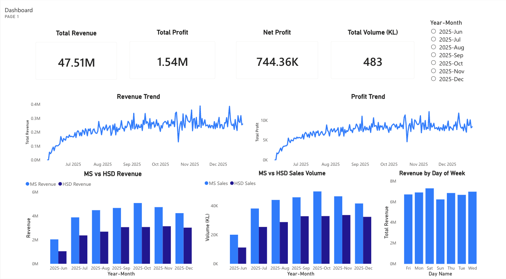
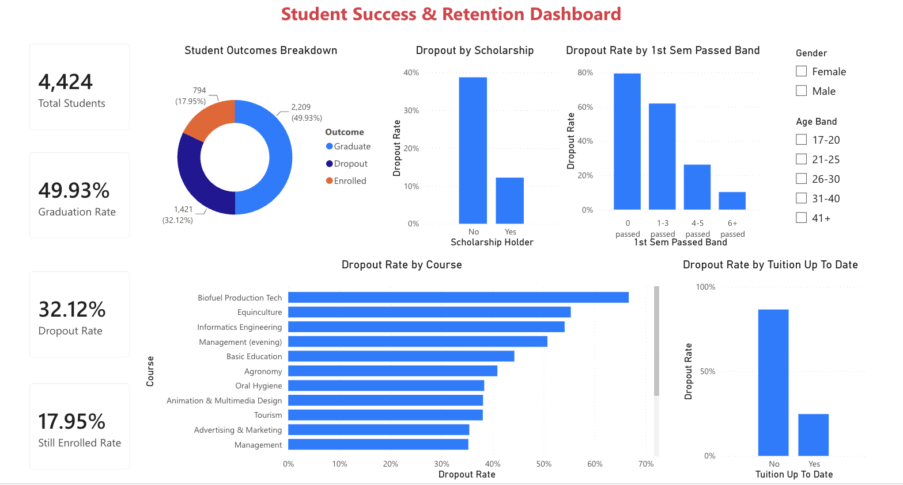

I turn messy, multi-source data into reporting people act on.
My best work starts with a number that doesn't add up and ends with a business decision that changed because of it. I work in SQL, Power BI, Tableau, Excel and Python.
annual ROI in four months, after tracing a margin gap nobody had caught
Fuel retail operations
daily KPIs kept accurate by reconciling four source systems
Fuel retail operations
of rare-event prospects (a 0.1% class) captured in the top 1% tier
Propensity model
query latency on 690K+ records after rebuilding the pipeline in PySpark
BigQuery pipeline
Selected work
Case studies
Each one walks through the question, the data, what I built, and what changed because of it.

Work experience · Power BI
Fuel retail operations: from monthly loss to 23.3% ROI
Leadership's question was simple: why isn't this business making money? I reconciled four systems that didn't agree, pinned down metric definitions with operations and finance, and built the Power BI reporting that exposed a hidden margin gap.

Independent project · Power BI
Student retention: who drops out, and when to step in
A dashboard over 4,424 higher-education students that separates who to watch (financial signals) from who needs help now (first-semester performance), and gives advisors a practical trigger for outreach.
top-1% capture on a 0.1% positive class
Customer Propensity Modeling & Segmentation
Finding the few likely planned-gift donors among 318K+ records, in data that was 53.9% incomplete, and turning scores into a three-tier outreach plan.
Read the case studyquery latency on 690K+ records
Ride Fare Prediction & Data Pipeline
Predicting Uber and Lyft fares across Boston: a BigQuery pipeline sped up with PySpark, models validated to $6.69 MAE, and results served through Flask.
Read the case studyinteractive Tableau visualizations
U.S. Airfare Trend Analytics
How U.S. fares moved before and after the pandemic, by state, city and airport, with nominal and inflation-adjusted views. Explore them live.
Explore the visualizationsMore work
All repositories on GitHub-
Football match agent In progress
An agent that answers questions about international football matches in plain English. An XGBoost model makes the predictions; Claude chooses which tool to run and explains the output.
-
A Tale of Two Trajectories: campus IT survey
MISO survey data from 2018, 2021 and 2024 revealed a post-pandemic gap: well-used, well-rated services like the LMS and Wi-Fi were rated as less and less important. Framed as recommendations for the CIO.
-
Spotify listening behavior
Skip behavior and listening patterns across streaming records, with K-Means segmentation into four listener cohorts.
Experience
Where I've done the work
-
Mar 2026 – Jul 2026Remote, Boston
Data Analyst
Street Care, homelessness nonprofit
- Maintained monthly Android and iOS download data for two of the nonprofit's apps.
- Built Excel dashboards tracking adoption, ratings and year-over-year growth, and summarized the trends for the team.
-
Sep 2025 – Dec 2025Boston, MA
Graduate Teaching Assistant
D'Amore-McKim School of Business, Northeastern University
- Supported 190+ graduate and undergraduate students as the go-to person for SQL, Python and Excel questions, explaining analytical concepts to a mixed-skill audience.
- Reviewed and validated student queries and models each week, catching logic and data-quality issues and walking people through the fix.
-
Jan 2024 – Aug 2025Remote, Boston
Business Operations Analyst
Bharat Petroleum Corporation Limited, Authorized Dealer
- Drove a turnaround from monthly loss to 23.3% annual ROI in four months by building Power BI dashboards (DAX measures, back-end data models) that surfaced a hidden margin gap.
- Built automated reconciliation routines across four source systems that kept reporting accurate across 120+ daily KPIs, using SQL to join and validate data.
- Applied demand forecasting and statistical analysis in Excel (Power Query, VBA) to guide inventory and pricing, holding a 4-day inventory cycle with zero stockouts across $96K monthly procurement.
- Partnered with operations, finance and supply stakeholders to gather requirements and turn findings into recommendations leaders could act on.
-
Aug 2023 – Dec 2023Pollachi, India
Data Analyst Intern
Mahindra & Mahindra Limited
- Ran a data analysis study on manufacturing process data across 13 conditions (ANOVA, hypothesis testing, regression), reaching 97.33% R², and documented findings that informed a 30% improvement in output quality.
Toolkit
Skills
What I use day to day, grouped by the job it does.
BI & visualization
Dashboards and reporting people actually open
Querying & languages
Getting the right data out, and trusting it
Excel
Still where a lot of business decisions get made
Data & cloud
Moving, joining and validating data at scale
Analysis & machine learning
From descriptive stats to predictive models
Business analysis
Making sure the numbers answer the right question
About
The short version
I came to analytics from mechanical engineering, which gave me a quantitative, process-minded way of approaching problems. Since then I've run reporting and decision support for a fuel retail business, supported 190+ students in SQL, Python and Excel as a teaching assistant, and built models on messy real-world data.
The work I enjoy most starts with a number that doesn't sit right. At BPCL, a monthly figure didn't reconcile across four systems. Tracing it led to a margin gap nobody had caught, and fixing it took the business from a monthly loss to a 23.3% annual ROI.
I use AI tools like Claude every day to move faster, and I always check what they produce. Outside work I like taking things apart to understand them. Most recently that was my electric scooter: when it threw an E7 error, I traced the fault to a break in the throttle cable and repaired it myself.
- OwnershipI chase a number that doesn't sit right until it makes sense.
- Comfortable with ambiguityI scope vague questions myself before I start building.
- Plain languageI translate technical findings for non-technical leaders.
- Mission-motivatedI'm drawn to data work with real stakes, including nonprofit and public-good work.
Hiring for an analyst role?
I'm looking for Data Analyst, Business Analyst and BI roles, and I can relocate anywhere in the US. Email is the fastest way to reach me.